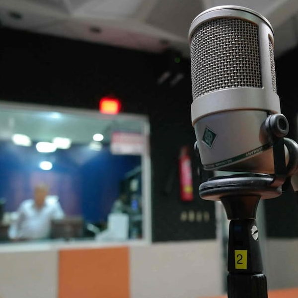
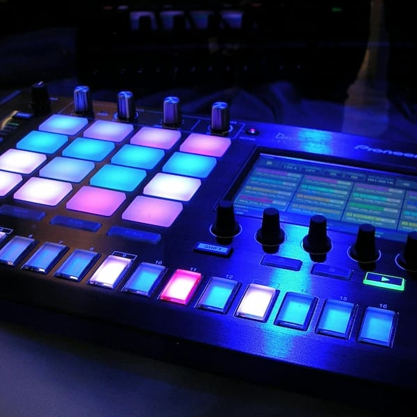
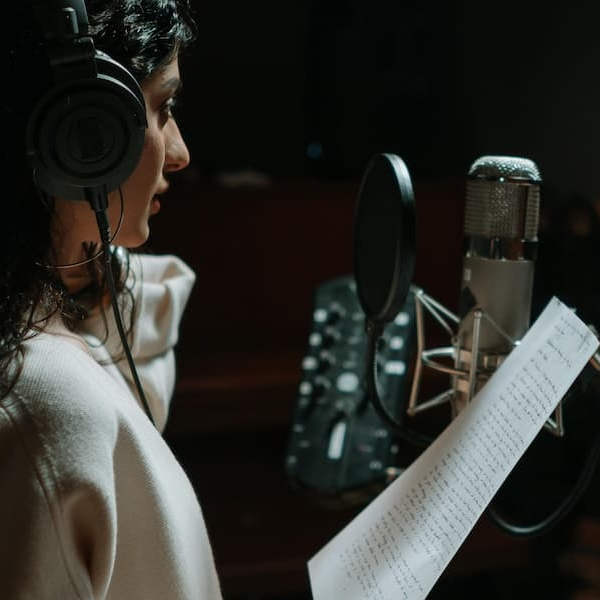
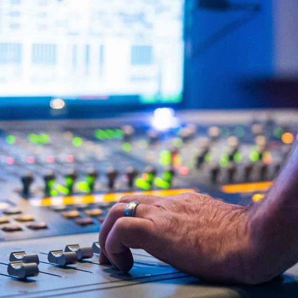
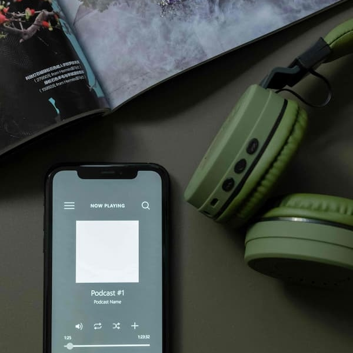
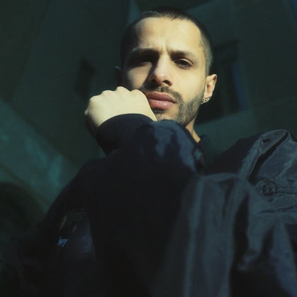
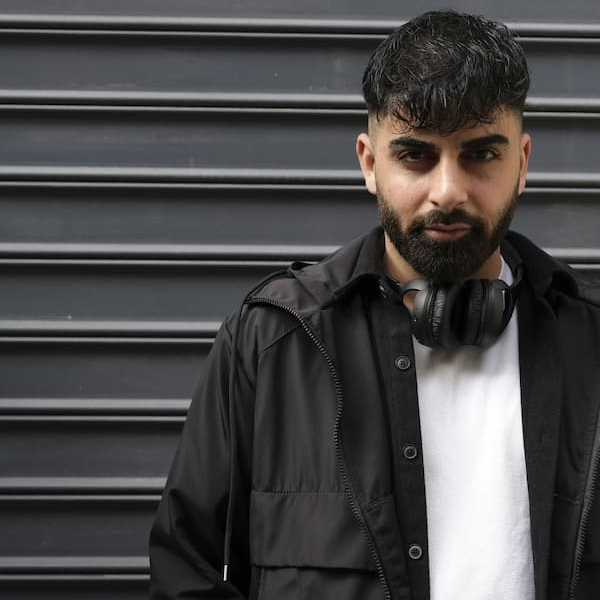
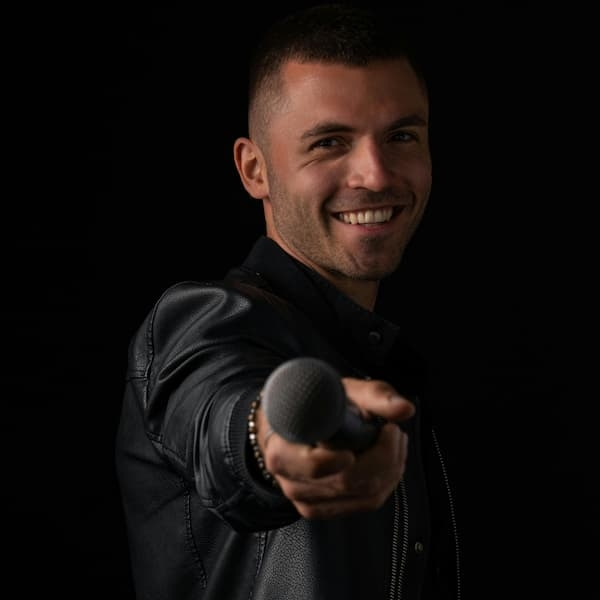
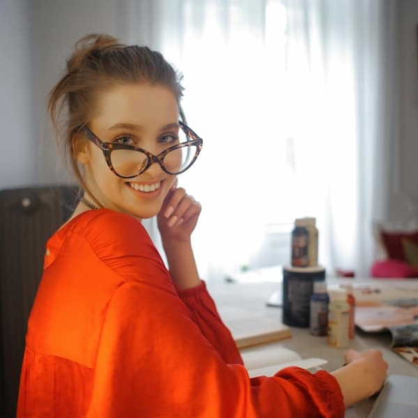

Зроби свій перший крок у світ музики
Особливості
-
Індивідуальний підхід
Багаторічна робота з музикантами й авторами дала нам розуміння важливості пошуку індивідуального підходу до кожного артиста. Ми виявляємо слабкі сторони й підсилюємо їх власним досвідом та навичками завдяки чому продукт виходить максимально органічним й служить стимулом для подальшого самостійного розвитку й кращого розуміння творчих та технічних процесів.
-
Розвиток ідей
Ідея - це іскра, яка може розпалити полум'я, що буде гріти мільйони сердець й так само в одну мить може згаснути, залишивши тьму невпевненості, нерішучості та ліні. Ми допоможемо зберегти цю іскру, щоб перетворити її у вогонь біля якого збиратимуться погрітись багато прекрасних людей.
-
Пошук натхнення
Натхнення - це бурхлива течія нашої свідомості, яка народжує нове на основі здобутого досвіду. Ми знаємо де ця течія бере свій початок і вже зібрали великий багаж досвіду, щоб довести тебе до початку й ти пройшов великий цікавий шлях на якому чекають пороги, перешкоди, але ми обіцяємо, що ти будеш як риба у воді.
-
Гарантований результат
В сучасному світі це найочікуваніша опція, яка й слугує стартовим відліком для будь чого. Ми максимально стараємось виявити потреби, зрозуміти мету та бажання творчих особистостей і тільки після цього даємо зрозуміти чи потрібна Вам наша послуга взагалі або в якій формі. Це може бути як і порада так, і допомога в оптимізації певних процесів.
Чим ми займаємось
- 
- 
- 
- 
- 
Наша команда
- 
Ігор Ропа
Автор
- 
Алі Маджуєв
Менеджер
- 
Павло Давидов
Звукорежисер
- 
Ірина Карпенко
Дизайнер